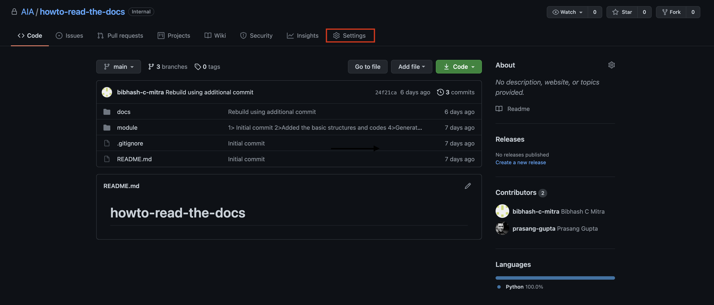

Usage
In this section, we will discuss the implementation details of the documentation. This includes getting the documentation ready locally and hosting it on github.
We offer 2 solutions for this exercise:
An In-depth implementation using
sphinx-quickstart. This would include you setting a lot of parameters with provided explanations for your use case.(Recommended if you want to implement and learn at the same time and if you have some spare time on your hands OR if you already are a PRO)
A Quick-and-Dirty implementation to get your documentation up and running. This would involve modifying an already implemented docs code swapping out sections with your case-specific details.
(Recommended if you don’t really care about what is happening in the background OR simply don’t have time)
Before proceeding with any of the steps, make sure that you have installed the necessary packages from the Installation page.
In-depth implementation
Generate basic documentation
Ensure that your repository is structured as
|_ module | |_ __init__.py | |_ some_file.py | |_ .... |_ setup.py (optional) |_ README.md |_ ....
Note
Make sure that
__init__.pyfile is present in each directory within the main module.Note
The auto-summary requires proper docstrings to be written. Functions without docstrings would be ignored.
Create a folder named
docsin the root directory, so that the structure of repo now is|_ docs |_ module | |_ __init__.py | |_ some_file.py | |_ .... |_ setup.py (optional) |_ README.md |_ ....
Run
sphinx-quickstartfrom inside thedocsfolder followed bymake html. This will auto-generate all necessary files required for a static documentation website.$ cd docs $ sphinx-quickstart > Separate source and build directories (y/n) [n]: y # This helps in organising the generated files into separate folders > Project name: <Your Project name goes here> > Author name(s): <Comma separated author names go here> > Project release []: <Version of the module goes here> $ make html
Files/Folders generated and their functions are listed below
- build
This folder contains HTML files for the static website.
- source
This folder contains all the source files needed to build the documentation (rst and configuration files)
- Makefile
Makefile for Linux/MacOS and Windows are provided to build the static documentation files (build) from the source files (source).
At this stage, your documentation would look like this: (You can check by opening
build/html/index.html)
Modifying configuration file
If you have installed the python module i.e. if you have installed it via
python setup.py installyou don’t have to do this but if you have not installed it then you have to add the following lines to yourconf.pyso that it can find your code references:import os import sys sys.path.insert(0, os.path.abspath('./../../'))
Note
The abspath needs to be provided for the root of the repository (where the module folder is present) which in our case is
'./../../'. This is needed for the autodoc to auto-generate documentation for the code part.Change the value of copyright variable
copyright = '2021, Emerging Technologies'
Add the required extensions in the
extensionssectionextensions = [ 'sphinx.ext.autodoc', # for generating documentation from docstrings 'sphinx.ext.autosummary', # generate summaries for autodoc 'sphinx.ext.autosectionlabel', # allow reference sections to use titles 'sphinx.ext.intersphinx', # link to other project documentations 'sphinx.ext.viewcode', # add links to python source code for documentation 'sphinx_autodoc_typehints', # automatically document param types 'nbsphinx', # integrate with jupyter notebooks 'sphinx.ext.napoleon', # support for numpy and google docstrings 'sphinx.ext.coverage', # collect document coverage 'sphinx_rtd_theme' # RTD theme ]
Warning
We have provided here the extensions that would be enough for most purposes. However, for advanced modifications, you may need to include additional extensions.
Sphinx’s extension page has more extensions and details about each if you want to get creative !
Add some variables
intersphinx_mapping = { # documents to be included for intersphinx functionality "python": ("https://docs.python.org/3/", None), } autosummary_generate = True # turn on autosummary generation autosummary_generate_overwrite = True # turn on overwriting for subsequent builds autoclass_content = "both" # add __init__ doc (ie. params) to class summaries html_show_sourcelink = False # remove 'view source code' from top of page (for html, not python) autodoc_inherit_docstrings = True # if no docstring, inherit from base class set_type_checking_flag = True # enable 'expensive' imports for sphinx_autodoc_typehints nbsphinx_allow_errors = True # continue through Jupyter errors add_module_names = False # remove namespaces from class/method signatures
Update the theme by replacing the
html_theme = 'alabaster'
line of code with
try: import sphinx_rtd_theme html_theme = "sphinx_rtd_theme" html_theme_path = [sphinx_rtd_theme.get_html_theme_path()] html_css_files = ["readthedocs-custom.css"] except: html_theme = 'alabaster'
This would render the documentation in the RTD theme. If however, some error is encountered in loading the theme, it would fall back to the
alabastertheme supported out of the box by Sphinx.Update your documentation by running the
make htmlcommand again from thedocsdirectory. At this stage, your documentation would look like this: (You can check by openingbuild/html/index.html)
Modifying Makefile
There are two makefiles which generate after you run sphinx-quickstart
Makefile: This makefile is used in Linux or MacOS
make.bat: This makefile is used in Windows
So based on which Operating System you are on, you need to modify the corresponding file
Linux or MacOS
In this case we need to replace the line below %: Makefile section so that it becomes:
@$(SPHINXBUILD) -M $@ "$(SOURCEDIR)" "$(BUILDDIR)" $(SPHINXOPTS) $(O); touch .nojekyll; echo '<meta http-equiv="refresh" content="0; url=./build/html/index.html" />' > index.htmlWarning
You might run into an error saying:
make: *** No rule to make target `html'. Stop. If this happens, you need to just correct the indentation and make sure that it starts with a tab rather than spaces. (This is a GNU make dependency)
Windows
In this case we need to add two lines before goto end so that it becomes:
%SPHINXBUILD% -M %1 %SOURCEDIR% %BUILDDIR% %SPHINXOPTS% %O% type NUL > .nojekyll echo ^<meta http-equiv="refresh" content="0; url=./build/html/index.html" /^> > index.html goto end
Note
Explanation for adding these two lines:
As we are not using Jekyll theme in our project we need to create a
.nojekyllfile in the/docsfolderNow as we have added a
.nojekyllfile, github pages will try to find a.htmlfile in the root directory (i.e.docswhich we will select in How to host on Github Pages ?, but our page is present inbuild/html/index.html. So we need a helper page which can redirect to the main build page indocsfolder. For that we create a newindex.htmlfile indocsfolder.
Adding rst files
Create a file
api.rstinside thesourcedirectory with the following content. This file is responsible for creating the autogenerated documentation for the python module.API ====== .. autosummary:: :toctree: _autosummary :template: custom-module-template.rst :recursive: module
Note
Replace
modulewith the directory name of your python module / toolkitWarning
We recommend using a template for docstring documentation as default function documentation is not very readable. You can copy the
source/_templatesfolder from the parent repository of this documentation or you can use this drive link to manually download the folder and put it in thesourcedirectory. If you do not plan on using this template, REMOVE THIS LINE::template: custom-module-template.rstfrom theapi.rstfile.It is recommended that there are certain sections that are added to the documentation. We recommend to add the following sections and hence, create an
.rstfile for each in the samesourcedirectory.installation.rstSteps to install the dependencies and the package itself with warnings and solutions to common installation problems
changelogs.rstChangelogs is an important part of version management to allow rollbacks and efficient debugging
references.rstReferences used for the package development with URLs
Each of these files will be of the form
HEADING ======= Content here in appropriate format
Replace the contents of the
index.rstfile with the following. This is done to adhere to a standard style of formatting the main file and section it in a readable format... toctree:: :hidden: :maxdepth: 3 Home <self> Installation <installation> Module / Toolkit <_autosummary/module> Changelogs <changelogs> References <references> NAME OF THE TOOLKIT =================== Content to be shown on the main documentation page ... Authors : Author 1, Author 2, ...This section here starts the Sphinx TOC tree. The
maxdepthparameter sets the maximum depth for the tree... toctree:: :hidden: :maxdepth: 3This section lists the entries to populate the left pane of the documentation. The format followed here is
XXX <YYY>whereXXXis the name that will be displayed on the left pane andYYYis the name of the.rstfile present in thesourcedirectory which will be displayed when a user goes to that section.Home <self> Installation <installation> Module / Toolkit <_autosummary/module> Changelogs <changelogs> References <references>
Note
Include any and all sections that need to be added based on the format. The
_autosummary/moduleformat is for the autogenerated docstrings documentation wheremoduleneeds to be replaced with the name of the python toolkit directory.The rest of the section follows the same structure as the rest of the
.rstfiles.
Update your documentation by running the
make htmlcommand again from thedocsdirectory. At this stage, your documentation would look like this: (You can check by openingbuild/html/index.html)
Quick-and-Dirty implementation
How to use the content of this repository directly
If you do not care about what is happening in the background and want a very rapid documentation with all the basic components, the following steps will help.
- Step 1
The structure of your repository should have the following structure. For this example we will call this module abracadabra.
Before
|_ abracadabra | |_ __init__.py | |_ some_file.py | |_ .... |_ setup.py (optional) |_ README.md |_ ....
Now copy the
docsfolder of this repository in the root directory of your repository containing the python module. So the structure of the repository will becomeAfter
|_ docs |_ abracadabra | |_ __init__.py | |_ some_file.py | |_ .... |_ setup.py (optional) |_ README.md |_ ....
- Step 2
Delete all the
.rstfiles insidedocs/source/_autosummaryas it contains the documentation of the python module of this repository.
- Step 3
Inside
docs/source/conf.pyyou can find a section called SECTION TO EDIT where you can edit the fields according to your projectproject
copyright
author
release
Warning
If you have installed the module with
python setup.py installthen you need to removesys.path.insert(0, os.path.abspath('./../../'))fromdocs/source/conf.py. This is to ensure there is no conflict between the installed module and the module in this repository.Inside
docs/source/index.rstchange:Content of the introductory section
Python moduletoabracadabra<_autosummary/module>to<_autosummary/abracadabra>
Inside
docs/source/api.rstchange:moduletoabracadabra(i.e. the name of your module or the folder from where autosummary will start generating automated documentations)
Inside
docs/source/installation.rstadd the steps of your installation.Inside
docs/source/usage.rstdelete everything and add instructions on how to use your repository.Note
If you do not want any Usage section in your repository, you can remove this
usage.rstfile and remove the lineUsage <usage>fromindex.rst.Inside
docs/source/changelogs.rstanddocs/source/references.rstadd your changelogs and references respectively.
- Step 4
Now we need to run the make command to build the html files:
$ cd docs $ make clean # This step is to remove all the prebaked files and folders which are not necessary $ make html
After you complete the following you can see the documentation if you open docs/index.html in any supported browser.
How to host on Github Pages ?
To host this page on github pages we have to follow the following steps:
Push all the files to
github.pwc.com$ git add docs/* $ git add docs/.nojekyll $ git commit -m <message> $ git push
Go to the
Settingstab on the upper right section of your github repositoryGo down to the GitHub Pages section
In the
Sourcesection select thebranch(whichever branch you pushed the files in the previous step) and after that choose the/docsfolder. Then click onSaveNow an URL will be generated with a note
Your site is published at <URL>, Click on the same.Voila ! Your documentation is ready.
How to Document?
In this section we have consolidated all the most commonly used sphinx syntaxes used in various parts of documentation. You can choose a snippet and add it in your documentation.
Inline formattings
one asterisk:
*text*for Italic. texttwo asterisks:
**text**for Bold. textbackquotes:
``text``for code samples.text
Numbered and Bullet list
This is a numbered list.
It has two items too.
This is a numbered list using
#
First bullet
Second bullet
A nested list with a space above
and some subitems
- Third bullet
Nested list without space
Code blocks
Adding :: at the end of paragraph and indenting them with 4 spaces results in a code block as below
Code block line 1
Code block line 2
Tables
Grid Table
Header row, column 1 (header rows optional)
Header 2
Header 3
Header 4
body row 1, column 1
column 2
column 3
column 4
body row 2
…
…
Simple Table
A
B
A and B
False
False
False
True
False
False
False
True
False
True
True
True
This is a subheading
This is a subsubheading
Roles
emphasis
strong
literalsubscript text
superscript text
for titles of books, periodicals, and other materials
\(a^2 + b^2 = c^2\).
For more roles please visit here
Directives
This is a figure.

This is a code block
def my_function():
"Loren Ipsum"
print("Hello World")
This is a math block
This is a note
Note
This is a note
This is a warning
Warning
This is a warning
This is to add a version
New in version 2.5: The version is 2.5
This is to note down version changes
Changed in version 2.6: The version changed
This is to show deprecated functions
Deprecated since version 3.1: Use
demo()instead.This is a glossary
For more directives please visit here